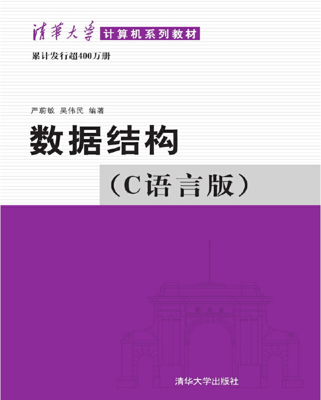

首页 > 书籍下载
《数据结构(C语言版)》严蔚敏PDF下载（高清完整版）
|  | 作者：严蔚敏、吴伟民 |
| 出版时间：2021年06月01日 | |
| 出版社：清华大学出版社 | |
| 书号ISBN：9787302023685 | |
| 总页数：335页 | |
| 总字数：50.9W |
这是一本非常经典的数据结构书籍，很多大学把它作为课堂教材，已经累计销售了 400W 册，非常牛批。
这里提供的是《数据结构(C语言版)》的高清 PDF 下载，内容完整，附带目录标签。
这本书已经有 30 多年的历史了，被将近 1000 所大学选为正式的教材，并且获得了 30 多个奖项，比如：
- 中华人民共和国科技进步奖
- 普通高等学校优秀教材全国特等奖
- 全国优秀畅销书金奖
- 第二届普通高等学校优秀教材全国特等奖
- 1996年度国家科学技术进步奖三等奖
有一位想考研的读者，买了这本书以后这样评价：
这是我的复习用书，它知识点很全面，解析很清楚，一看就懂，一学就会，还配合了相应的题型，给我们巩固和深化。
另外一个初学者也给出了好评：不错很棒！考研408推荐教材，虽然还没看，不过这本书名气在外，内容应该相当不错，这是第二本数据结构的书籍。
不过作为一名老程序员，我有点不太推荐初学者使用这本书，因为它有点刻板和严谨，不够通俗易懂。书籍目录
- 第1章 绪论
- 1.1 什么是数据结构
- 1.2 基本概念和术语
- 1.3 抽象数据类型的表现与实现
- 1.4 算法和算法分析
- 第2章 线性表
- 2.1 线性表的类型定义
- 2.2 线性表的顺序表示和实现
- 2.3 线性表的链式表示和实现
- 2.4 一元多项式的表示及相加
- 第3章 栈和队列
- 3.1 栈
- 3.2 栈的应有和举例
- 3.3 栈与递归的实现
- 3.4 队列
- 3.5 离散事件模拟
- 第4章 串
- 4.1 串类型的定义
- 4.2 串的表示和实现
- 4.3 串的模式匹配算法
- 4.4 串操作应用举例
- 第5章 数组和广义表
- 5.1 数组的定义
- 5.2 数组的顺序表现和实现
- 5.3 矩阵的压缩存储
- 5.4 广义表的定义
- 5.5 广义表的储存结构
- 5.6 m元多项式的表示
- 5.7 广义表的递归算法
- 第6章 树和二叉树
- 6.1 树的定义和基本术语
- 6.2 二叉树
- 6.3 遍历二叉树和线索二叉树
- 6.4 树和森林
- 6.5 树与等价问题
- 6.6 赫夫曼树及其应用
- 6.7 回溯法与树的遍历
- 6.8 树的计数
- 第7章 图
- 7.1 图的定义和术语
- 7.2 图的存储结构
- 7.3 图的遍历
- 7.4 图的连通性问题
- 7.5 有向无环图及其应用
- 7.6 最短路径
- 第8章 动态存储管理
- 8.1 概述
- 8.2 可利用空间表及分配方法
- 8.3 边界标识法
- 8.4 伙伴系统
- 8.5 无用单元收集
- 8.6 存储紧缩
- 第9章 查找
- 9.1 静态查找表
- 9.2 动态查找表
- 9.3 哈希表
- 第10章 内部排序
- 10.1 概述
- 10.2 插入排序
- 10.3 快速排序
- 10.4 选择排序
- 10.5 归并排序
- 10.6 基数排序
- 10.7 各种内部排序方法的比较讨论
- 第11章 外部排序
- 11.1 外存信息的存取
- 11.2 外部排序的方法
- 11.3 多路平衡归并的实现
- 11.4 置换一选择排序
- 11.5 最佳归并树
- 第12章 文件
- 12.1 有关文件的基本概念
- 12.2 顺序文件
- 12.3 索引文件
- 12.4 ISAM文件和VSAM文件
- 12.5 直接存取文件(散列文件)
- 12.6 多关键字文件
- 附录
- 附录A 名词索引
- 附录B 函数索引
书籍下载
一键登录，免费下载完整版 PDF，文件名称：《数据结构 C语言版》严蔚敏.pdf